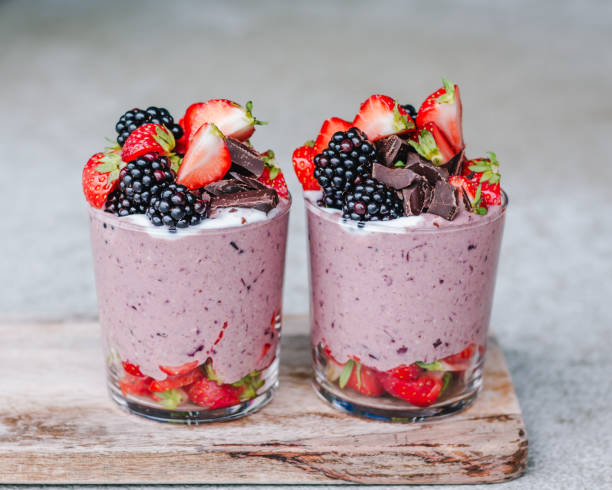

Many cafés rely only on Instagram to present their
business. Without a website, customers cannot easily
explore the menu, atmosphere, or story behind the café.
The challenge was to design a website that communicates
warmth, comfort, and personality.
Designing with Human Emotion
The goal of this project was not only to display
information, but to create a digital experience
that feels warm and inviting.
Through warm colors, spacious layouts,
and visual storytelling, the website encourages
visitors to imagine themselves enjoying coffee
inside the café.
Featured Menu
Coffee Latte
Fresh Croissant

Dessert Selection
Expected Results
The redesigned website provides a more professional
digital presence for the café and helps attract new
customers searching for aesthetic coffee spots online.
"The website beautifully represents the cozy
atmosphere of our café. Customers often explore
our menu online before visiting."
— Café Luna Owner
Let's Build Something Meaningful
I create modern websites designed to connect
with users emotionally and help businesses
present their brand beautifully online.